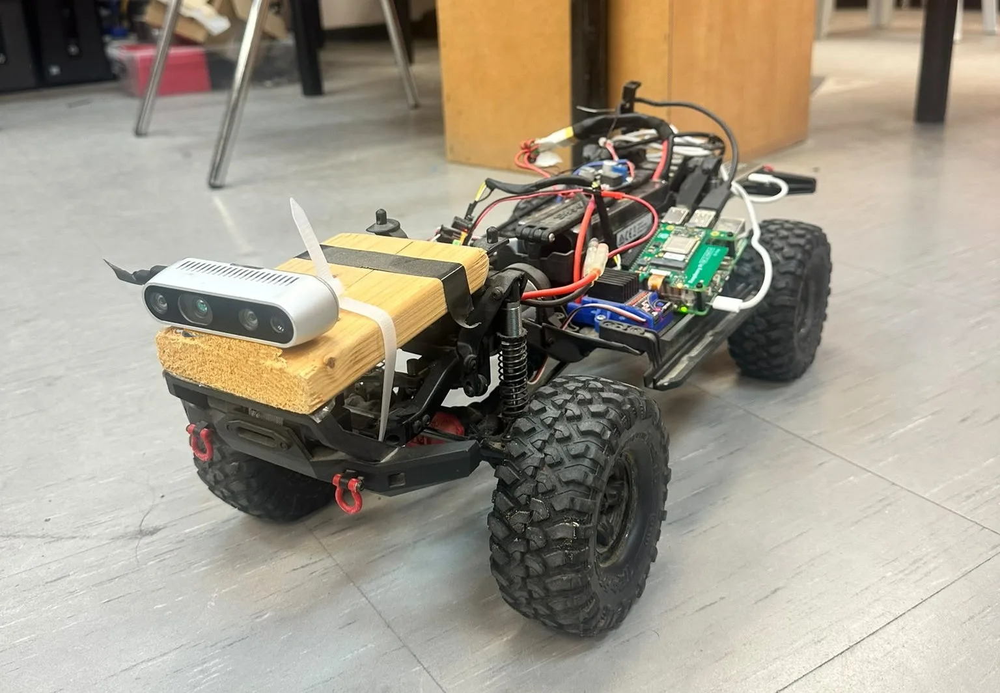
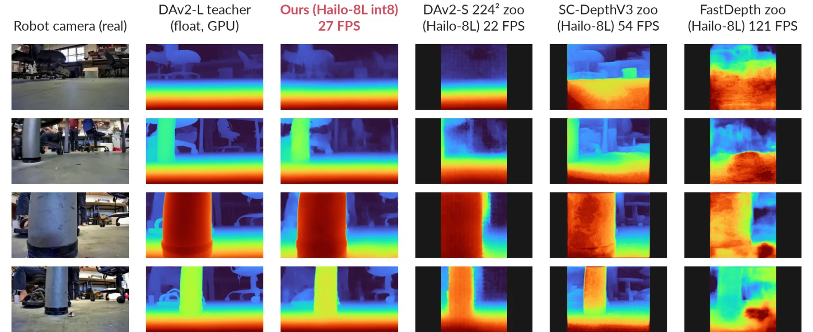
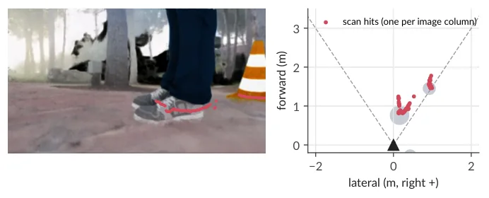
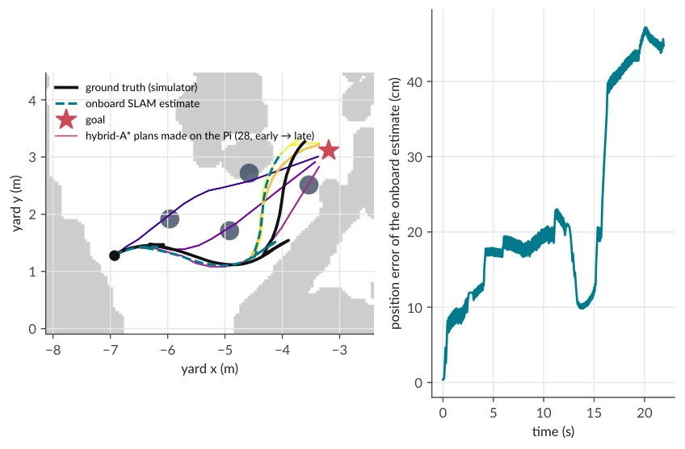
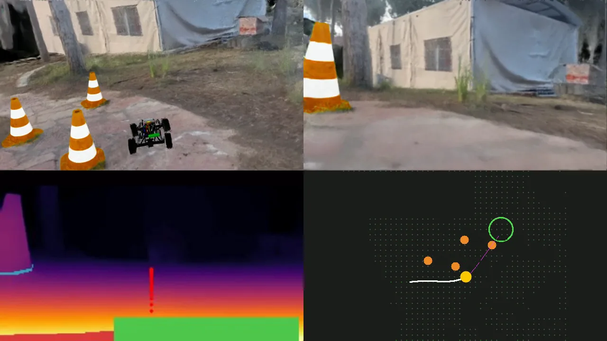
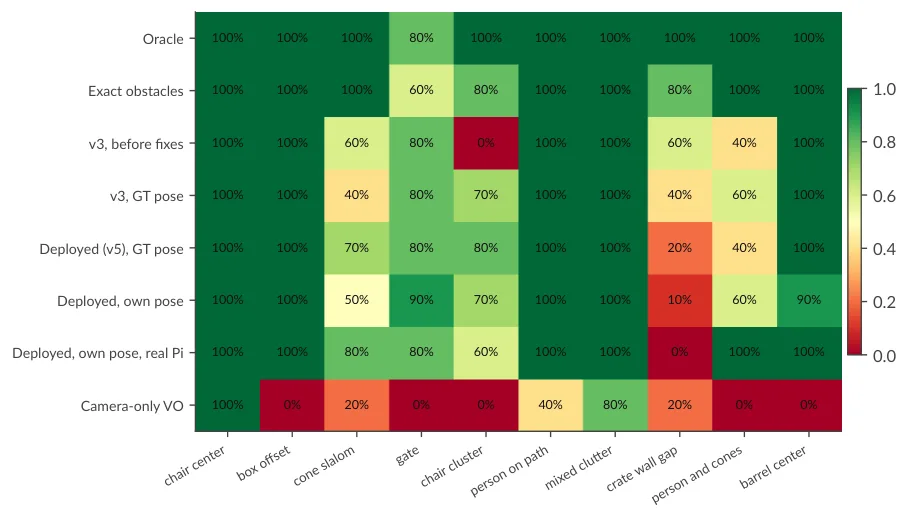

DANIEL：把深度基础模型蒸馏成无注意力学生，跑在树莓派 5 + Hailo-8L 上
Seeing to Drive on a Single Board: Attention-Free Depth for Onboard Robot Navigation
一句话：int8 注意力在几百个 token 上结构性失效，所以把深度基础模型蒸馏成纯卷积学生，再用「相机高度 + 地面接触点」把相对深度换成米制量程，于是几瓦算力也能做测距与导航。
FPS
AbsRel
share
success
作者、单位与技术谱系 · Research context
作者与单位
研究脉络
- Depth Anything V2（教师模型）方法基座关系：蒸馏来源与主要对照：学生的监督标签来自 DAv2-Large，横向对比里也用官方 DAv2-Small 构建作为芯片上的强基线。[DANIEL §IV/§V 与表 I]
- MiDaS 的尺度/位移不变损失与四尺度梯度匹配方法基座关系：训练目标沿用：只是把「不变」当作优点，主动放弃绝对尺度。[DANIEL §IV]
- Hailo Model Zoo 的 SC-DepthV3 / FastDepth 构建评价对象关系：同芯片基线：用来界定「不是所有小模型都行」——两者更快但精度差一档。[DANIEL 表 I]
合作网络
- Itai Mizlish ↔ Ariel UniversityItai Mizlish → Ariel University关系：署名关系（第一作者与机构）[arXiv 官方 HTML 首页]
- DANIEL ↔ github.com/itaim18/DANIELAuthor group → https://github.com/itaim18/DANIEL关系：论文声明的代码/模型/数据发布地址[arXiv 摘要与官方 HTML 摘要末尾]
- Itai Mizlish ↔ Boaz Ben-MosheItai Mizlish → Boaz Ben-Moshe关系：同机构共同署名[arXiv 官方 HTML 首页]
作者与单位取自首页署名与邮箱；技术接续取自正文与表 I 的对照设置。未据 GitHub 账号推断更多关系，也未核查该仓库是否已公开完整训练数据。
方法本质拆解 · What actually changed
蒸馏 + 两轮真值微调
学生从零训练（ImageNet 初始化编码器），用 Depth Anything V2-Large 的标签蒸馏（7,230 仿真 + 720 真实帧），再在渲染真值上微调 8 个 epoch 得到 v3，最后用地平线加权损失得到部署版 v5。权重的确全部改过，且教师只提供形状监督；部署后不再训练，属于一次性离线蒸馏而非在线适配。
把尺度约束从网络里拿掉
训练侧只用尺度/位移不变的 L1 与梯度匹配，等于主动放弃绝对尺度，换取跨域一致性。推理侧的尺度约束来自几何先验：相机高度 h、焦距 fy、主点行 cy 与地面轮廓，形成 Z=fy·h/(v−cy)，再叠加「高出地面 5 cm」「接触连续五行」「命中高度 ≥6 cm」三条硬门限。
芯片上只做前向，几何全在 CPU
推理端没有额外的网络或优化：NPU 上跑 35.1 ms 的学生前向（端到端 37.0 ms），CPU 上做逐行地面轮廓拟合、接触点检测、5 cm 栅格累积（3 次命中且达最密格 30% 才置障碍）以及 hybrid-A* 规划。也就是说米制化、建图与规划都是确定的几何/搜索步骤，可单独验证。
换掉数值上不成立的算子，而不是补偿它
它改变的不确定性是「量化误差」：int8 注意力把小于一步长的权重抹零，误差无法靠校准恢复，于是把算子换掉（无 softmax / 无 LayerNorm），让量化损失从误差预算里消失（int8 与 float 的 Pearson 0.99993）。局部结果靠几何量程接到米制世界；它没有做的是学习度量尺度，也没有处理低结构与未观测空间。
输入是单目 RGB；改变的是网络架构（注意力 → 纯卷积学生）与尺度来源（学习 → 相机高度与地面接触几何）；动作为蒸馏 + 芯片 int8 前向 + 地面轮廓测距；直接效果是 27.1 FPS、AbsRel 0.269 且 int8≈float。

结论与问题Conclusion & Motivation
核心结论
在只有几瓦算力的平台上，把深度基础模型搬上 NPU 的正确做法是改架构而不是改量化：int8 注意力在几百 token 规模上结构性失效（449 token 时 91% 的 softmax 权重低于一个 int8 步长，却携带 17–33% 的注意力质量），所以作者蒸馏出一个无注意力学生。学生在 Hailo-8L 上 27.1 FPS（batch 8 为 59 FPS），int8 与 float 输出的 Pearson 相关为 0.99993，且在留出场景上 AbsRel 0.269，明显好于官方 DAv2-Small 构建的 0.354 与自建 int8 的 0.477。米制量程完全来自几何（相机高度 + 地面轮廓），因此不受相对深度逐帧尺度漂移影响。
动机与问题
机器人需要「相机变测距仪」，但可用的深度基础模型是为 GPU 设计的 ViT，参数量与算力都不匹配。加速器（Hailo-8L）虽然支持注意力，却是全整数量化：权重与激活都是 8 bit。作者先按常规路线把 Depth Anything V2-Small 编译上芯片，在真实机器人视频上看着正常（与 float 的中位 Pearson 0.99），但在院子渲染图上三分之一的留出帧把箱子或人「溶解」进地面。于是问题从「怎么量化得更好」变成「为什么 int8 注意力会在这里失效」，以及「有没有不依赖注意力的等价能力」。
方法Method
方法总览
诊断很直接：softmax 权重落在 [0,1]，均匀 8 bit 量化的步长是 1/255≈3.9e-3；当注意力均匀铺在 N=449 个 token 上时每个权重约 1/N≈2.2e-3，已经小于一个步长，只能被舍入到 0 或 1 个步长。实测 float 模型里 91% 的权重低于这一步长，且最后一个 block（直接喂给深度头）损失最大。作者的替代方案是蒸馏：教师为 Depth Anything V2-Large，学生为 ResNet-34 编码器 + U-Net 解码器（卷积、BN、ReLU、双线性上采样、跳连），24.5 M 参数，与 DAv2-Small 的 24.8 M 几乎相同，从而把「架构」与「容量」两个因素分开。
关键技术细节
训练用 MiDaS 的尺度/位移不变 L1 加四尺度梯度匹配，只监督深度形状而不监督绝对尺度；v1 在 7,230 帧仿真与 720 帧真实图上蒸馏，v3 再用渲染真值微调 8 个 epoch（13,902 仿真 + 2,024 真实），把教师继承的范围偏差从约 −30% 压到 −7%；v5 把地平线以下行的损失权重乘 4，使「贴地假命中」从 13.7% 降到 10.2%。米制化用地面几何：水平相机下地面点深度 Z=fy·h/(v−cy)，于是「障碍物与地面的接触行」直接给出距离；逐行取中心 80% 列的第 25 百分位视差拟合地面轮廓并强制单调，像素高出地面 ≥5 cm 的判为障碍，连续五行成立才算接触；只映射高度 ≥6 cm 的命中（把幻影命中从 2,376 降到 75）。

实验Experiments
实验设置
芯片基准用 400 帧仿真图（来自 3 个留出场景的 36 个 episode，带渲染的米制深度真值）与 100 帧真实机器人图（无真值）；每个 Hailo-8L 模型都在芯片上运行并把输出读回，按各自宽高比取中心裁剪，用逐帧最小二乘尺度+位移对齐后报 AbsRel、δ1，并额外报「障碍像素」（3 m 内、按真实位姿反投影落在道具碰撞体上的像素）上的指标。真实视频上用与教师 DAv2-Large 的 Pearson 相关作代理指标。导航评测在真实院子的高斯泼溅重建里做硬件在环，10 个随机场景、10 个种子，另设「精确障碍物」上界。
实验数字与比较
芯片上学生 v5 全面领先：AbsRel 0.269（DAv2-S zoo 0.354、SC-DepthV3 0.414、自建 int8 0.477、FastDepth 0.530），障碍像素 0.197（0.330–0.767），真实视频 r=0.996（zoo 0.979、FastDepth 0.709），同时更快（27.1 FPS 对 21.6 与 16.6 FPS，且处理像素多 2.9× 与 1.7×）。与 float GPU 参照比，学生在障碍像素上让出几分（教师 0.144），但整体更好，因为它在本域渲染真值上微调过；DA3 在这一域并不优于 DAv2。硬件在环：完美障碍物 9.2±0.4 / 10 场景，学生感知 7.9±1.1，只用自身位姿 7.7±0.7，把真实 Pi + Hailo 放进回路 8.2±0.4（5 个种子）。
消融/失败边界
诊断段本身就是一组消融：重新校准 + 编译器量化微调只把「Pearson<0.8 的帧比例」从 48% 降到 37%，传感器噪声校准模型仍留 30–39% 坏帧，Hailo 官方 Model Zoo 构建同样块状并丢目标——也就是说所有 int8 transformer 构建都栽在同一处，而无注意力学生不会。蒸馏侧的边界也清楚：仅用教师标签时范围偏差约 −30%，必须加渲染真值微调才到 −7%；把损失权重偏向地平线以下才把贴地假命中从 13.7% 降到 10.2%。失败边界有两处被明确量化：低于 5 cm 的结构对扫描不可见（阈值降到 2 cm 时真值深度闭合到 −0.5 cm，学生仍有 +2.5 cm 偏差）；规划器会「先走再确认」，即进入尚未观测的空间。
局限与迁移Limitations & Transfer
局限与待核验
作者明确承认：整套评测只在一个重建院子里、障碍物是静态的；自主位姿实验用的是仿真轮速与陀螺；真实驾驶只有一次、单一路线、单一光照且没有真值；学生的真实地面米制量程未标定，相机俯仰角量到 3.8° 但没有在板上补偿；Pi 的功耗、真实相机路径与真车自主驾驶都尚未测量。我们待核验：硬件在环分数对仿真构建敏感（作者说恢复版构建下同一份代码少 1.4 个到点），因此绝对分值不宜跨构建比较；「r=0.996」是与教师的一致性而非精度，作者自己也强调了这点；另外 449 token 的失效分析针对 DAv2-S 的 224×392 输入，换分辨率或换模型是否同结论需另测。
与你研究路线的关系
这篇给我们两条可直接用的工程结论。第一，端侧部署时先判断目标架构是否与加速器的数值格式兼容，再决定量化还是蒸馏——「int8 注意力在几百 token 上失效」这个判据可以提前算（1/N 与 1/255 的比较、以及 softmax 权重分布），不必等到掉帧才发现。第二，米制尺度可以交给几何而不是网络：用相机高度与地面接触点把相对深度变成量程，等于对单目尺度的逐帧漂移免疫，这与我们在单目/视觉先验进入因子图时「用外部几何锚定尺度」的做法同源。可迁移模块是「地面轮廓逐行拟合 + 接触点检测 + 高度门限」这一套轻量扫描器，它不依赖学习、可直接与激光/IMU 里程计对照。下一步实验：在我们的数据集上复现「接触点测距」，用 LiDAR 或 RTK 做真值，量化低结构（<5 cm）与远处（>20 m）的失效比例，再决定它能否作为视觉前端在退化场景下的兜底量程源。







